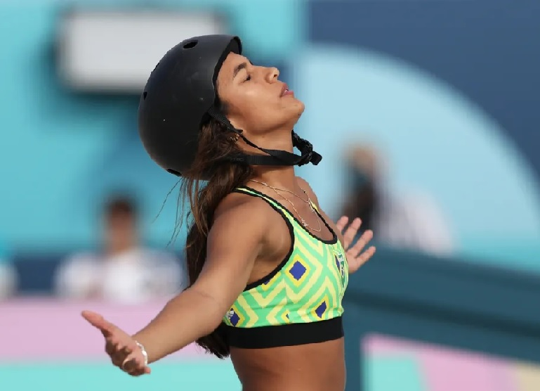

Campeã em 2022 e vice em 2023, Rayssa Leal conquistou neste sábado seu segundo título Mundial de skate street com direito a show na pista em Roma, na Itália. Em sua primeira competição desde as Olimpíadas de Paris 2024, onde faturou a medalha de bronze, a skatista maranhense de 16 anos fez duas voltas impecáveis, brilhou na disputa de manobras e conquistou a vitória com pontuação total de 270,56, à frente de Momiji Nishiya (269,14) e Miyu Ito (249,53), numa final em que as sete rivais eram representantes do Japão.
A brasileira respondeu com uma volta impecável para chegar a 86,44 e assumir a primeira colocação. Ouro em Tóquio 2020, Momiji Nishiya também brilhou e conseguiu um 85,33.
Com o altíssimo nível estabelecido na primeira passagem, as skatistas partiram para a segunda volta em busca da perfeição. E Rayssa chegou o mais perto possível: precisa, a brasileira conseguiu uma linha ainda mais limpa e foi a única das líderes a melhorar sua nota, com um 88,43.
Na penúltima chance, Rayssa brilhou com um backside flip smith que valeu nota 93,99, chegando a 270,56 e assumindo a primeira colocação. Com a pontuação, a brasileira pôde comemorar o segundo título mundial mesmo caindo na última manobra.